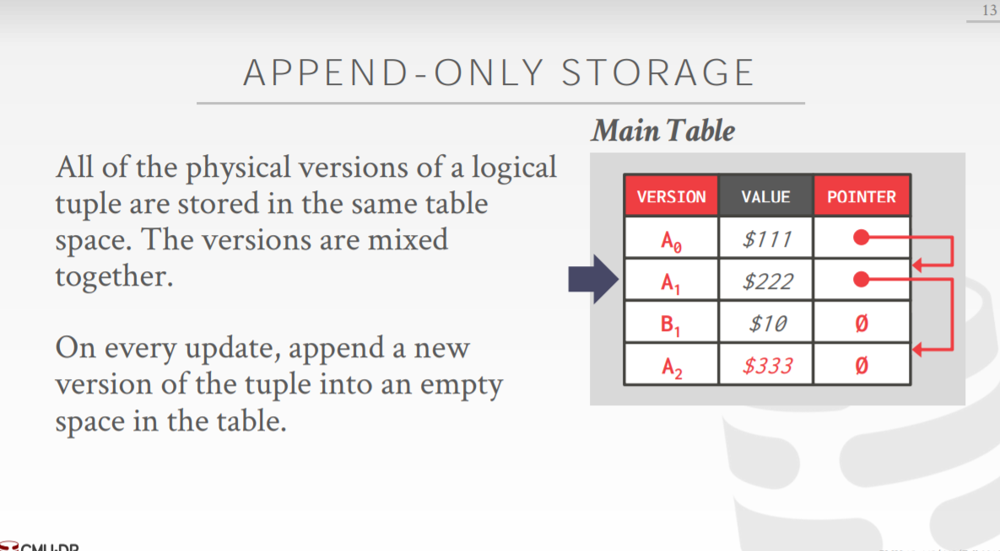
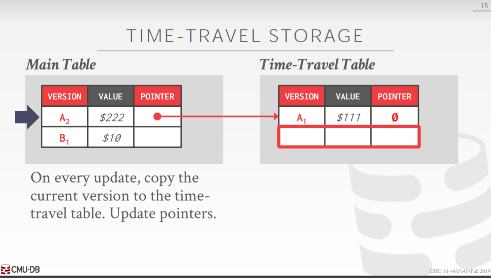
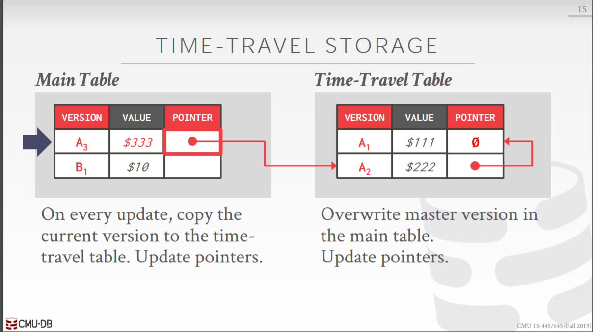
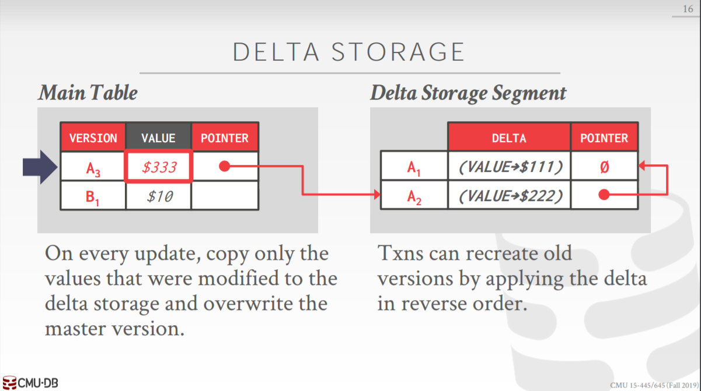
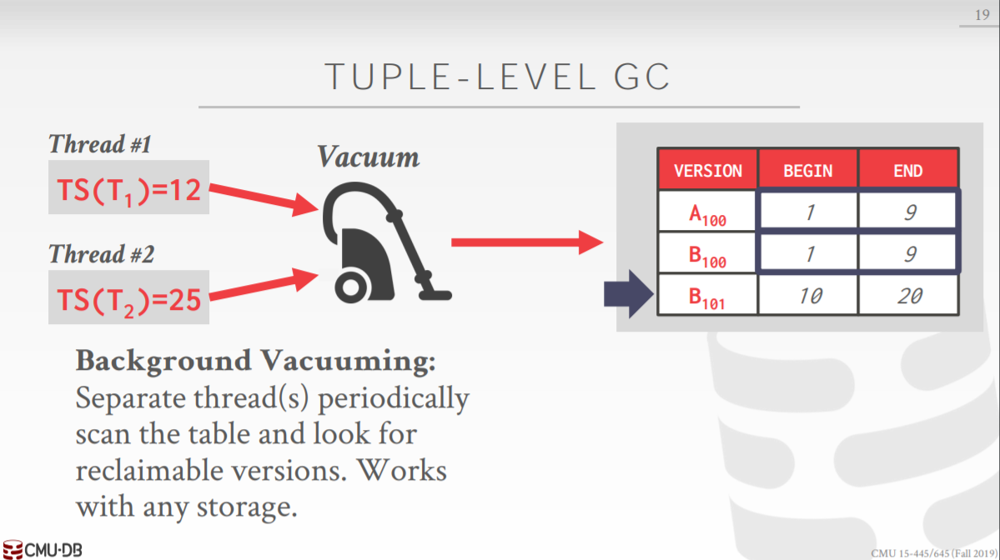
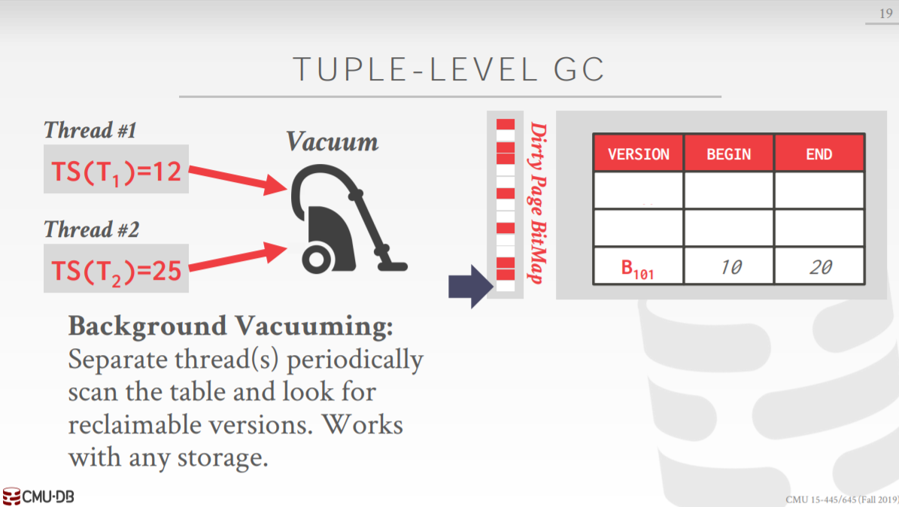
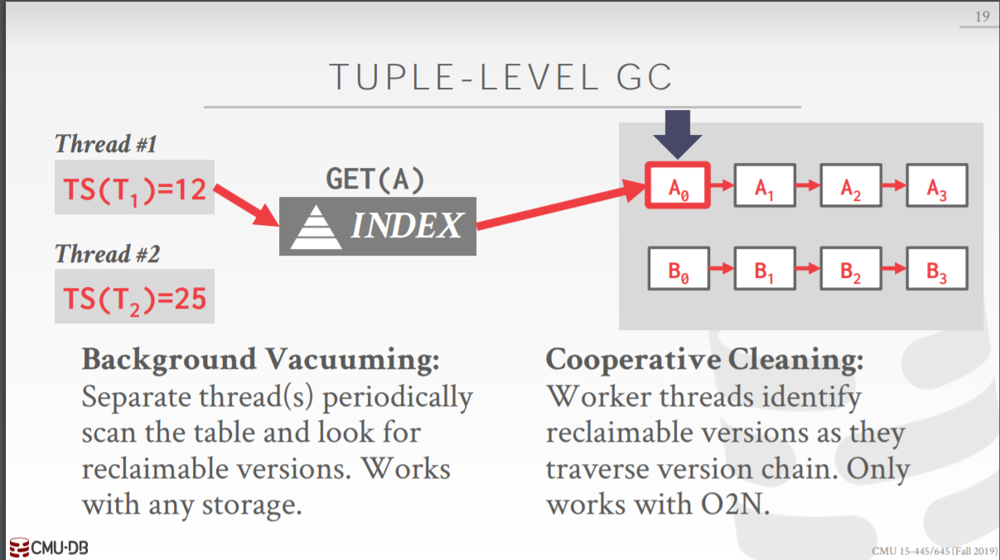
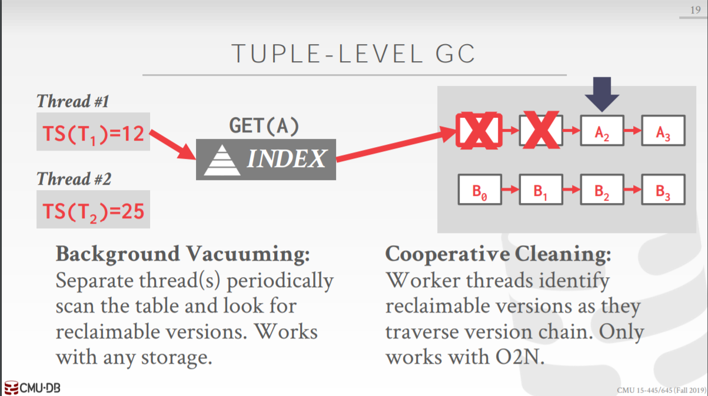
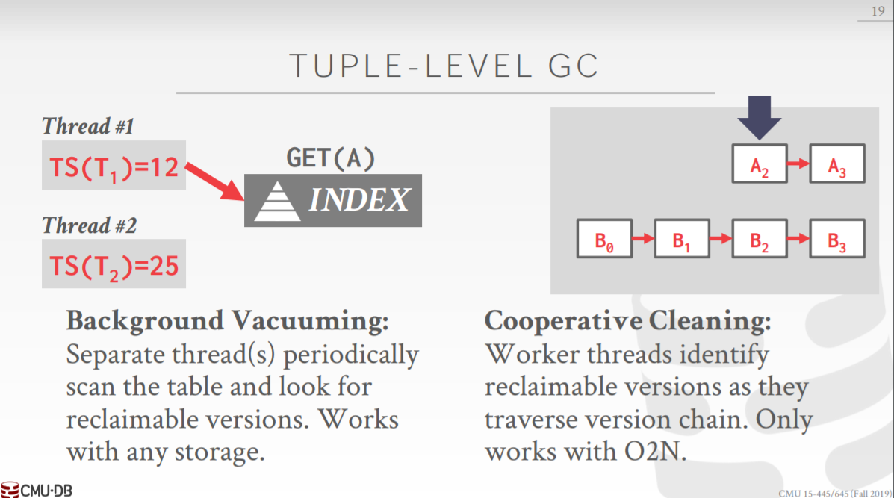

[CMU15445]:多版本并发控制
Multi-Version Concurrency Control
多版本并发控制机制(MVCC)当今被广泛应用于数据库当中，使用该机制的DBMS会为每个数据项维护多个版本，当对数据项进行操作时，遵循两个基本原则
- 当事务对数据项进行read操作的时候，DBMS会返回该事务开始执行时数据库中最新的数据项版本
- 当事务对数据项进行write操作的时候，DBMS会创建一个新的数据项版本
该机制的一个重要特性就是读写操作互不阻塞，而这个特性与快照隔离机制分不开
当事务进入数据库的时候，会获得一份数据库的快照(snapshot)，而这个快照是一份数据库中已经提交的事务所写的值的拷贝，这意味着事务不会读取到其他未提交事务对数据项所做的修改，事务在这个快照上以完全隔离的方式和其他事务进行操作，对于只读事务来说，就完全不需要进行等待(试想在2PL中，为了保证可串行化, read操作需要首先获取共享锁)
由于写写(WW)操作可能会引发冲突，所以在事务提交之前，同样需要进行有效性检查，如果有效性检查通过，那么就
- 将事务变为提交状态
- 然后写入数据库
这两步是一个原子操作
Version Storage
接下来将会介绍数据库是是怎样存储数据项的物理版本
通常DBMS会为每一个tuple设置一个**版本列表(version chain)**，所有索引的指针(叶子结点上的指针)指向的都是链表的头部，总共有三种可选的存储方法
Append-Only-Storage
在该方法当中，所有tuple的版本都会被存储在一个表当中

链表存储版本的顺序也有一些区别
Oldest-To-Newest(OTN)
每次将新版本附加在链表尾部，这样做的话当每次获取最新版本时都得遍历一遍链表
Newest-To-Oldest(NTO)
每次将新版本放在链表头部，这样做每次更新版本是都被更新所有指向该链表的索引的指针
Time-Travel-Storage
该方法中维护了两个表，一个表(main table)放当前数据项版本，另一个表(time-travle table)放之前的旧版本，每次更新版本时，就将当前版本拷贝到
time-travle table当中，将新版本放入main table中

Delta-Storage
该方法中同样也使用了两个表，一个表中存储当前的最新版本，另一个表中存储版本之间的差异

该方法在大数据量的表中有不错的优化效果
Garbage Collection
由于每次使用write操作都会创建新版本，因此随着时间的推移，版本数目也会越来越多，势必要进行旧版本的清除操作
tuple级的垃圾回收
该方法通过直接查看page中的tuple来检查这些tuple的版本，具体有两种方案
- Background Vacuuming
使用一些定时执行的清除线程来扫描表，清除那些可以回收的版本，该方法适用于所有的存储模型


一种可选的优化方法是使用一个
dirty page map,当page中的tuple的旧版本需要被清除时，就将该map中的指定page设置为dirty, 当dirty page map中的dirty page到达一定比例之后，DBMS就会开启清除线程对这些page进行清理操作Cooperative Cleaning
该方法中那些worker threads在对版本链表进行遍历的时候，顺便找出那些可以被回收的旧版本，该方法仅适用于O2N



事务级别的垃圾回收
每个事务都会维护
write set和read set, 在事务进行提交的时候，垃圾回收器会通过事务的write/read set来进行垃圾回收的判断
本博客所有文章除特别声明外，均采用 CC BY-SA 4.0 协议 ，转载请注明出处！